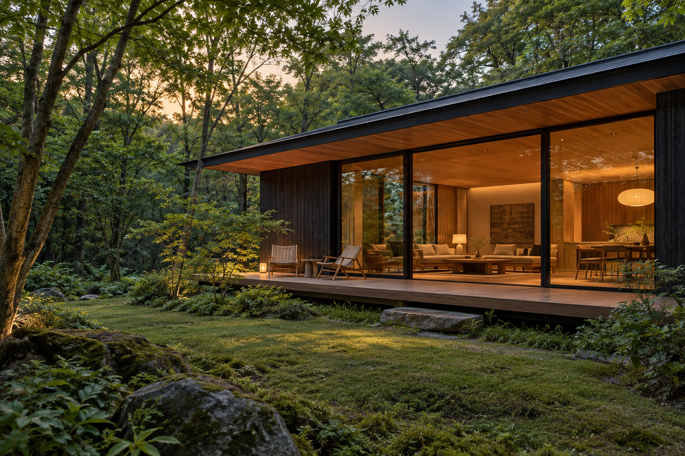
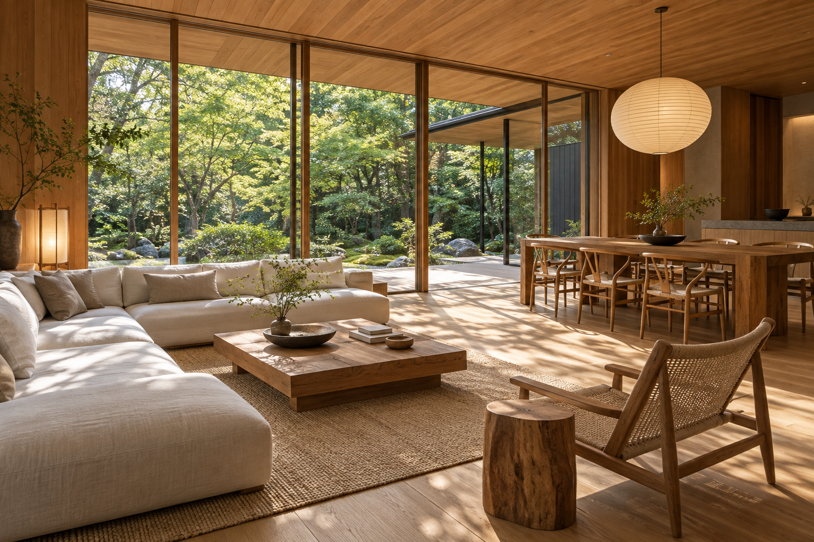
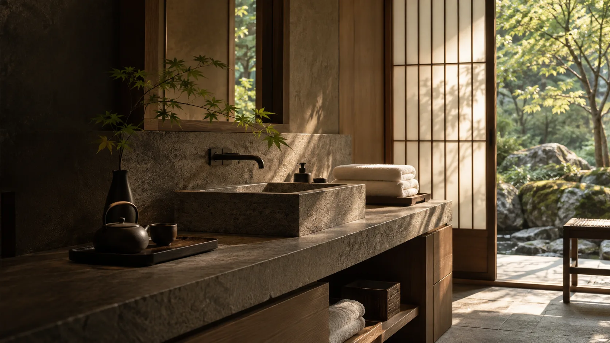

PRIVATE WOODLAND RETREAT
予定のない日を、
森のなかで。
木の香り。窓いっぱいの緑。
一棟を、あなたたちだけの時間に。
一棟を、あなたたちだけの時間に。
01 / STAY SLOW
何もしないことが、
旅の目的になる。
02 / THE SPACE
内と外が、
ゆるやかにつながる。

身軽に、暮らすように。
必要なものが揃った、心地よい滞在を。
設備・定員はデモ用の設定です。
- 滞在
- 一棟貸し / 最大4名（仮）
- 設備
- キッチン・Wi-Fi・バス（仮）
- チェックイン
- 15:00 / アウト 11:00（仮）

03 / FIND YOUR DAYS
次の休みを、
少しだけ特別に。
日程から、滞在までの流れを体験できます。
デモ用の空室・料金です。実際の予約・決済はできません。
本番では選定した予約サービスへ接続します。
04 / BEFORE YOUR STAY
安心して、
旅を楽しむために。
所在地・アクセス・営業情報は未設定です。
実在する施設への案内ではありません。
子どもと一緒に泊まれますか？
年齢・人数・必要な備品を確認して案内する想定です。掲載条件は施設の運営方針に合わせて確定します。
予約の変更やキャンセルについて
本番では予約サービスの規定と統一し、予約確定前に確認できる位置に掲載します。デモでは予約は成立しません。
車でのアクセス・駐車場は？
所在地と道路状況を確認後、写真付きの道案内を掲載します。デモに実在する住所や地図は掲載していません。
LINEで相談できますか？
下の相談プレビューで、よくある質問から案内へ進む流れを体験できます。実際のLINEには接続していません。
05 / JOURNAL
森間のたより
2027.03.01 仮のお知らせ春の滞在準備を、少しずつ。＋
窓辺のしつらえや、滞在中に使う道具を少しずつ整えています。これは更新機能を説明するための仮の記事です。
STAY CONNECTED
旅の前から、
気持ちよく。
写真で知る。気になることを相談する。
予約へ、迷わず進める導線を。